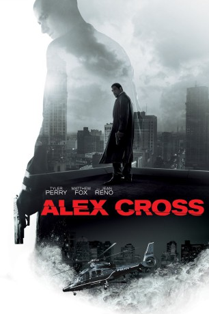

#2276 Alex Cross
 gesehen am 30.08.2016
gesehen am 30.08.2016
 
 IMDB-Wertung: 5.1 / 10
IMDB-Wertung: 5.1 / 10  Metascore: 30
Metascore: 30 
Polizeipsychologe und Detective Alex Cross gehört zu den Mordermittlern des Detroit Police Departments und hat im Laufe seiner Karriere schon so einige extreme Verbrechen zu Gesicht bekommen, doch sein nächster Fall hat es in sich: Es scheint, als hätte ein einzelner Täter drei tote Leibwächter und eine zu Tode gefolterte Managerin auf dem Gewissen. Der wahnsinnige Serienkiller wird unter den Gesetzeshütern schnell zu „Picasso“, da er immer eine Zeichnung des berühmten Malers am Tatort zurücklässt. Cross und seine Kollegen heften sich an seine Fersen und kommen ihm so langsam auf die Schliche, doch dann macht der Detective einen folgenschweren Fehler und rückt sich selbst und seine Familie ins Blickfeld des Soziopathen. Diesen Zug wird er für den Rest seines Lebens bereuen. Um dem Killer endlich das Handwerk zu legen, muss Alex nun seine eigenen moralischen Grenzen hinterfragen und entscheiden, welchen Preis er bereit ist zu zahlen.
Jahr: 2012
Dauer: 101 Minuten
FSK: 16
Land: USA Studio: Summit EntertainmentTonspuren: DTS - ,
Untertitel: Deutsch,
Auflösung: 1080p (1920x800) Größe: 9359 MB
Genre: Action, Thriller, Krimi, Mystery
Regisseur:  Rob Cohen
Rob Cohen
Drehbuch: Marc Moss, Kerry Williamson, James Patterson
Soundtrack: John Debney
Darsteller:
 Tyler Perry als Alex Cross
Tyler Perry als Alex Cross Edward Burns als Thomas Kane
Edward Burns als Thomas Kane Matthew Fox als Picasso
Matthew Fox als Picasso Jean Reno als Giles Mercier
Jean Reno als Giles Mercier Carmen Ejogo als Maria Cross
Carmen Ejogo als Maria Cross Cicely Tyson als Nana Mama
Cicely Tyson als Nana Mama Rachel Nichols als Monica Ashe
Rachel Nichols als Monica Ashe John C. McGinley als Captain Richard Brookwell
John C. McGinley als Captain Richard Brookwell Werner Daehn als Erich Nunemacher
Werner Daehn als Erich Nunemacher Yara Shahidi als Janelle Cross
Yara Shahidi als Janelle Cross- Sayeed Shahidi als Damon Cross
 Bonnie Bentley als Detective Jody Klebanoff
Bonnie Bentley als Detective Jody Klebanoff- Stephany Jacobsen als Fan Yau Lee
 Giancarlo Esposito als Daramus Holiday
Giancarlo Esposito als Daramus Holiday Chad Lindberg als Chemist
Chad Lindberg als Chemist- Simenona Martinez als Pop Pop Jones
- Jessalyn Wanlim als Paramita Megawati
 Tim Holmes als Referee
Tim Holmes als Referee- Ingo Rademacher als Ingo Sacks
- Tiren Jhames als Guard Manning Station
- Sonny Surowiec als Hans Friedlich
- Darcy Leutzinger als Bomb Squad Head
- Christopher Stadulis als Soon to Be Dead Man #1
- Timothy J. Richardson als Soon to Be Dead Man #2
- Peter Lawson Jones als Minister
 Marcelo Tubert als Cloche
Marcelo Tubert als Cloche- Alexandra Ruddy als Brookwell Aide
- Keith Cameron als Bodyguard
 Tim Sitarz als Packard Plant Rapist
Tim Sitarz als Packard Plant Rapist Simon Rhee als Fan Yau Bodyguard #3
Simon Rhee als Fan Yau Bodyguard #3- I. Ketut Arya Wijaya als Bali Police Captain #2
 Dan Anders als Bomb Squad Member , uncredited
Dan Anders als Bomb Squad Member , uncredited Jason Botsford als Restaurant Patron , uncredited
Jason Botsford als Restaurant Patron , uncredited- Mel Chude als K-Rash , uncredited
 Robert Forte Shannon III als Fight Fan , uncredited
Robert Forte Shannon III als Fight Fan , uncredited- Robert Graziosi als Attorney in Courthouse , uncredited
- Aswan Harris als Detective , uncredited
 Steven Hauptman als Fight Fan , uncredited
Steven Hauptman als Fight Fan , uncredited- Pennie-Marie Hawkins als Child Protection Agency Worker #1 , uncredited
- Sherry Hudak als Psychiatrist , uncredited
 Gary Jones als Funeral Guest , uncredited
Gary Jones als Funeral Guest , uncredited- Abe Larkin als Fight Spectator , uncredited
- Annette Lawless als Detective , uncredited
 Amanda Lewan als Jasi , uncredited
Amanda Lewan als Jasi , uncredited- Becca Marks als Nurse , uncredited
- John Newkirk als Forensic Photographer , uncredited
- Terri Partyka als Child Protection Agency Worker #3 , uncredited
 Brent Reichert als Police Officer , uncredited
Brent Reichert als Police Officer , uncredited- Janine Sarnowski als Pedestrian Extra , uncredited
- Deanna Sherman als Pedestrian #2 , uncredited
Datei: X:\3-Trilogie(A-F)\Alex Cross\Alex Cross (2012, FSK16, 1920x800).mkv seit 26.10.2015
Festplatte: HD Collection-2(A-Z)-3(A-M)
 Alle Filme aus Gruppe '3-Trilogie(A-F)\Alex Cross'
Alle Filme aus Gruppe '3-Trilogie(A-F)\Alex Cross'